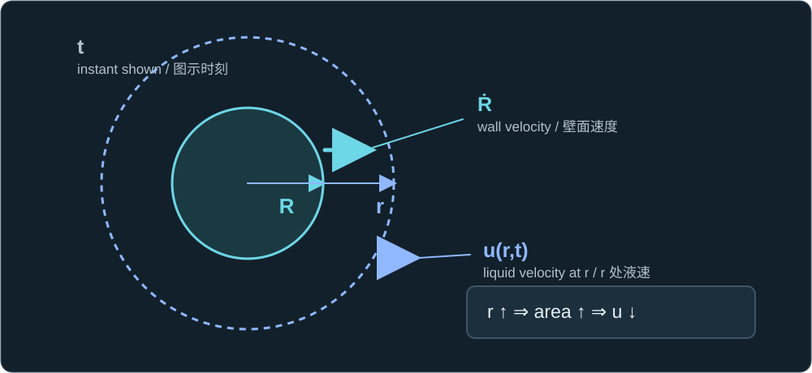
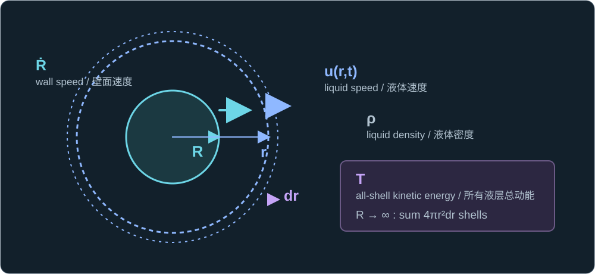
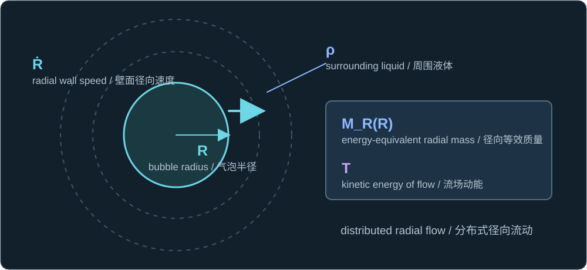
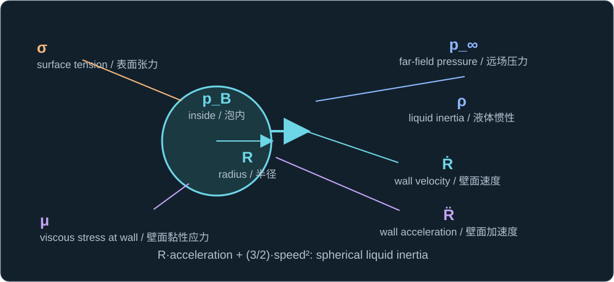

Historical lesson/review. Use the complete textbook course for the current study order. Former Chapters 4 and 5 are now Appendixes A and B.
历史课程／复习材料。当前学习顺序请使用完整教材课程。原第四、五章现为附录 A、B。
Keep the idealized model: an isolated spherical bubble in an effectively infinite, incompressible liquid of density ρ. The wall moves without interfacial mass transfer. Lesson 4 showed that radial liquid speed falls with the square of distance.
继续采用理想化模型：一个孤立球形气泡处在可视为无限延伸、密度为 ρ 的不可压缩液体中。壁面运动时不发生界面质量传递。第四课已表明液体径向速度随距离的平方增大而减小。
u(r,t) = [R(t)/r]²Ṙ

The radius R and outer location r identify where wall speed Ṙ and liquid speed u(r,t) are measured.
R 与外侧位置 r 标明了壁面速度 Ṙ 和液体速度 u(r,t) 各自的测量位置。
Add up the kinetic energy
累加液体动能
A thin spherical liquid shell has volume 4πr²dr. Multiply that volume by its kinetic-energy density and integrate from the bubble wall outward. The result is the total kinetic energy of the radial liquid motion.
一层薄球壳液体的体积为 4πr²dr。将这一体积乘以该处的动能密度，再从气泡壁面向外积分，即得到液体径向运动的总动能。
T = ½ρ∫R∞u²4πr²dr = 2πρR³Ṙ²

A liquid shell at r has thickness dr, density ρ, and speed u(r,t). Summing shells from R outward gives the flow energy T.
半径 r 处的液层厚度为 dr、密度为 ρ、速度为 u(r,t)；从 R 向外累加各液层得到流场动能 T。
Compare this with the familiar kinetic-energy form for one coordinate. The resulting effective radial mass grows as the cube of bubble radius. It describes the surrounding liquid set in motion, not a fixed material mass inside the bubble or the translational added mass of a solid sphere.
将它与单个坐标的常见动能形式比较，可见所得径向等效质量随气泡半径的三次方增长。它描述被带动的周围液体，不是泡内固定的物质质量，也不是固体球平移时的附加质量。
T = ½MR(R)Ṙ², MR(R) = 4πρR³

R and wall speed Ṙ set distributed radial motion in liquid density ρ; M_R(R) is its energy-equivalent mass and T its kinetic energy.
R 与壁面速度 Ṙ 决定密度为 ρ 的液体径向运动；M_R(R) 是能量等效质量，T 是动能。
Because the effective radial mass changes as R changes, the pressure force must account for more than wall acceleration alone. Applying the radial energy balance gives an inertia term containing both the wall acceleration and its velocity squared. The coefficient 3/2 follows from the spherical flow geometry.
由于径向等效质量随 R 改变，压力驱动力所需平衡的不只是壁面加速度。对径向运动应用能量平衡，会得到同时含有壁面加速度和壁面速度平方的惯性项。系数 3/2 来自球对称流动的几何关系。
Combining that liquid inertia with the bubble-wall pressure, surface tension, and viscous stress gives the common incompressible Rayleigh–Plesset equation:
将液体惯性与气泡壁面的压力、表面张力和黏性应力结合，得到常用的不可压缩 Rayleigh–Plesset 方程：
ρ[R R̈ + (3/2)Ṙ²] =
pB − p∞ − 2σ/R − (4μ/R)Ṙ

The diagram locates interior p_B, exterior p_∞ and ρ, interfacial σ and μ, radius R, wall speed Ṙ, and acceleration R̈.
图中标出了泡内 p_B、外侧 p_∞ 与 ρ、界面处的 σ 与 μ、半径 R、壁面速度 Ṙ 及加速度 R̈。
This equation evolves a bubble only after its initial radius and wall speed, external pressure history, and internal-pressure law are supplied. It does not create the first nucleus. Its spherical, incompressible assumptions also become questionable near a wall, during a jetting collapse, or when acoustic compression matters.
只有给定初始半径和壁面速度、外部压力历程以及泡内压力规律后，该方程才能求出气泡演化；它本身不会产生最初的气核。在邻近固壁、塌缩形成射流或声学压缩效应显著时，其球对称、不可压缩假设也需要重新审视。
One check
一道检查题
If the wall speed stays fixed while the bubble radius grows, what physical change in the surrounding liquid makes a constant-mass particle model for the bubble wall inaccurate?
如果气泡半径增大而壁面速度保持不变，周围液体发生了什么物理变化，使得用恒定质量的粒子模型描述气泡壁面不准确？